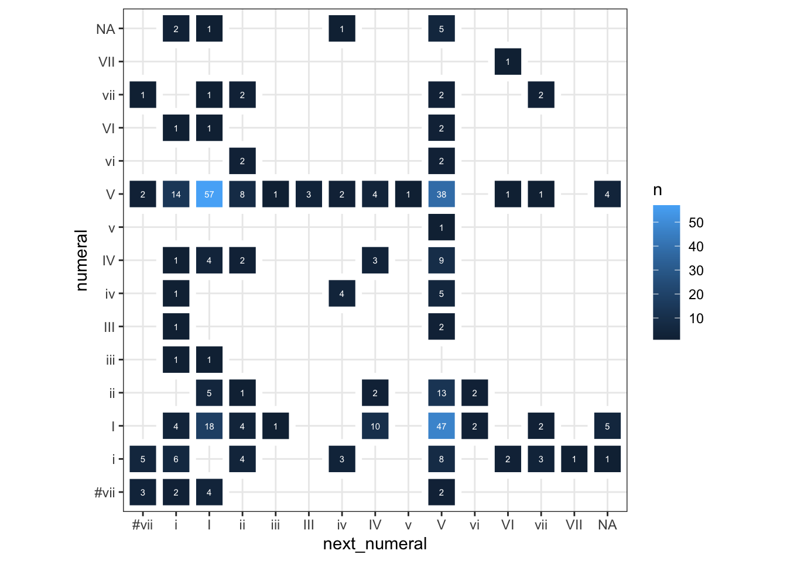
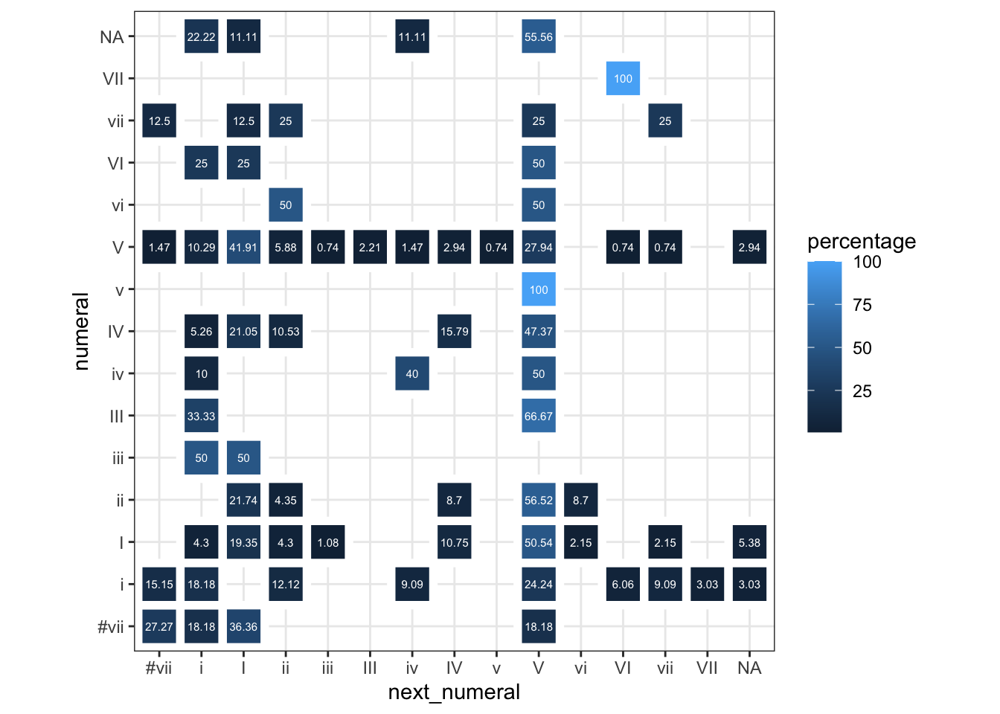

## load my libraries
library(tidyverse)
library(data.table)
setwd("~/gitcloud/corpora/dcml_corpora/schumann_kinderszenen/harmonies")
# all the files I want to use in my folder.
# here I'm using json.
files <- list.files(pattern = "*.tsv")
# Read files and add filename column called "song"
data <- lapply(files, function(x) {
df <- read_tsv(file = x)
df$song <- x
return(df)
})
df <- rbindlist(data, fill = TRUE)Week 3: Data Analysis, Time, Cadences, Phrases, etc.
Overview
This week, we begin by focusing on some aspects of data analysis. We’ve spent so long extracting data from scores, that it’s probably time to think about analyzing data, and some interesting questions we might ask of that data.
On Monday, we discussed the homework, and some possible project ideas. We then broke into groups and analyzed some preprocessed data (everyone used Spotify data, anticipating where we will go later this quarter).
On Wednesday, we are going to talk about a few aspects of time and structure in music. Specifically, we will look at:
- Meter and Key relationships
- Cadence types in songs
- Phrases
- Re-examine chord-to-chord transitions
- Various ways we might codify this data
We will begin by looking at some data from the Digital and Cognitive Musicology Lab (DCML) at EPFL in Lausanne, Switzerland. The scholars at DCML have meticulously analyzed score data and provided easy-to-analyze tsv and json files. It’s worth looking at their annotation standards to see how the data was encoded, and what the best practices for this project are.
An example of how some of the data is encoded can be found here.
Getting the data
The DCML github repo has many corpora that can be explored and downloaded. Each song has chord data, harmony data, measure data (with some timing information),rhythm and duration information, and much more.
From this already-processed data, we can explore some research questions. I have put two folders on canva: one of Schumann’s Kinderszenen (op.15), and another of Tchaikovsky’s Seasons (op. 37a).
Some Research Questions for the Day
- How do key’s interact with time signature?
- What types of cadences are present in the these songs?
- How do chord progressions work in this corpus?
Compiling the Data
The first step will be taking all of these files and putting them into a single dataframe. We will work with both R and Python here. Note that we will be using neither HumdrumR nor music21 today; our data is already extracted.
I’m going to use two libraries here–tidyverse and data.table. Typically people use one or the other of these. This opening code just uses one bit from data.table (list.files).
I set my working directory here to where my files are (yours will be different). After putting all of the data into a list, I’ve stored it in a variable called files, and I then use base R’s lapply function to basically loop over all files and read the tsvs into a single data frame. I’ve also created a column called song in which I can put my file names. This will help me group by piece as needed.
The Python code is the same as the R, basically. Here we are using the Pandas library (it’s fantastic; learn more here). The os and glob functions are allowing me to read directories from my machine and put the file names together, respectively.
NB: The one difference I noticed between R and Python here was that Python didn’t really have a native ability to expand the ~ operator, as is common in Unix machines (like Macs). Instead I wrote out my pathname explicitly here.
import pandas as pd
import os
import glob
# Set working directory
os.chdir("/Users/danielshanahan/gitcloud/corpora/dcml_corpora/schumann_kinderszenen/harmonies")
# Use glob to get all TSV files in the directory
files = glob.glob("*.tsv")
# Read files and add filename column called "song"
# create an empty list called data
data = []
## loop over all of the files, appending to the dataframe.
for file in files:
df = pd.read_csv(file, sep='\t')
df['song'] = file
data.append(df)
# Combine all of the files into one (actually many pandas data frames into one)
combined_data = pd.concat(data, ignore_index=True)Now that we have all of our data, we can begin to ask some research questions of it.
Time Signature and Key Relationships
Is there a relationship between time signature and key?
Tidyverse gives us a nice tool called distinct that will basically delete rows between objects. Here, I’ve taken the song, the global key signature, and the time signature and asked for it to look for distinct ones. As every file is names something different, it means I’ll get one per song (this would change if I wasn’t looking at global key signatures).
df |> distinct(song, globalkey, timesig) song globalkey timesig
<char> <char> <char>
1: n01.harmonies.tsv G 2/4
2: n02.harmonies.tsv D 3/4
3: n03.harmonies.tsv b 2/4
4: n04.harmonies.tsv D 2/4
5: n05.harmonies.tsv D 2/4
6: n06.harmonies.tsv A 3/4
7: n07.harmonies.tsv FALSE 4/4
8: n08.harmonies.tsv FALSE 2/4
9: n09.harmonies.tsv C 3/4
10: n10.harmonies.tsv g# 2/8
11: n11.harmonies.tsv e 2/4
12: n12.harmonies.tsv e 2/4
13: n13.harmonies.tsv G 4/4I actually find it a bit better to define a variable and then run a table on it, like so:
x <- df |> distinct(song, globalkey, timesig)
table(x$globalkey, x$timesig)
2/4 2/8 3/4 4/4
A 0 0 1 0
b 1 0 0 0
C 0 0 1 0
D 2 0 1 0
e 2 0 0 0
FALSE 1 0 0 1
G 1 0 0 1
g# 0 1 0 0So here we can see that there is only one piece in C major, and it is in 3/4, 2 pieces in E-minor, and there are both in 2/4, etc.
# instead of distinct, we can just use Pandas' drop_duplicates function.
x = combined_data.drop_duplicates(subset=['song', 'globalkey', 'timesig'])
# intead of table, we can use "crosstab"
my_table = pd.crosstab(x['globalkey'], x['timesig'])
print(my_table)timesig 2/4 2/8 3/4 4/4
globalkey
A 0 0 1 0
C 0 0 1 0
D 2 0 1 0
F 1 0 0 1
G 1 0 0 1
b 1 0 0 0
e 2 0 0 0
g# 0 1 0 0Cadence Types
The dataset also provides us with annotations of cadences in each song. There are a few different types of cadences:
- Perfect Authentic Cadences
- Imperfect Authentic Cadences
- Half Cadences
- Evaded Cadences
- Deceptive Cadences
- Plagal Cadences
Each of these is written as an abbreviation: PAC, IAC, etc.. Each of them is labeled with a “C” at the end, so I just decided to filter for lines that had that, which return the onset of the cadence.
The code below usees tools we’ve already seen before:
- Filter and grep grabs everything from the cadence column that ends with a “C”.
- The select only grabs the columns I want (here the filename and the cadence column)
- I then count all the cadences
- I use
mutatefrom the tidyverse to create a percentage column.
df |> filter(grepl("C", cadence)) |>
select(song, cadence) |>
group_by(song) |>
count(cadence, sort = TRUE) |>
mutate(percentage = n / sum(n) * 100)# A tibble: 27 × 4
# Groups: song [13]
song cadence n percentage
<chr> <chr> <int> <dbl>
1 n11.harmonies.tsv HC 7 77.8
2 n12.harmonies.tsv HC 6 85.7
3 n06.harmonies.tsv PAC 5 100
4 n02.harmonies.tsv IAC 4 40
5 n02.harmonies.tsv PAC 4 40
6 n03.harmonies.tsv PAC 4 66.7
7 n04.harmonies.tsv HC 4 66.7
8 n08.harmonies.tsv IAC 4 50
9 n08.harmonies.tsv PAC 4 50
10 n10.harmonies.tsv HC 4 50
# ℹ 17 more rowsSo this tells us some interesting information! Number 11 seems full of half cadences! Number 6 only has perfect authentic cadences (which is kind of strange!).
What if I’m actually interested in the metric placement of these cadences?
In these annotations, “0” means the downbeat, and the fractions (I think?) are distance from that downbeat.
So we could group by cadence type, and add the mn_onset data if we’re interested in cross-referencing the onset data with the cadence type, we get some interesting information!
df |> filter(grepl("C", cadence)) |>
select(cadence, mn_onset) |>
group_by(cadence) |>
count(cadence, mn_onset, sort = TRUE) |>
mutate(percentage = n / sum(n) * 100)# A tibble: 15 × 4
# Groups: cadence [4]
cadence mn_onset n percentage
<chr> <chr> <int> <dbl>
1 HC 1/4 19 57.6
2 PAC 1/4 17 54.8
3 PAC 0 10 32.3
4 IAC 0 8 57.1
5 IAC 1/4 5 35.7
6 PAC 1/2 4 12.9
7 HC 0 3 9.09
8 HC 7/16 3 9.09
9 HC 1/2 2 6.06
10 HC 3/16 2 6.06
11 HC 3/8 2 6.06
12 EC 0 1 100
13 HC 1/8 1 3.03
14 HC 3/4 1 3.03
15 IAC 3/4 1 7.14import pandas as pd
# Filter rows where 'cadence' contains 'C'
cadences = combined_data[combined_data['cadence'].str.contains('C', na=False)]
# Select only 'song' and 'cadence' columns
selected_columns = cadences[['song', 'cadence']]
# Group by 'song' and 'cadence', count occurrences, and reset index
grouped_data = selected_columns.groupby(['song', 'cadence']).size().reset_index(name='n')
# Sort values by count in descending order
df_sorted = grouped_data.sort_values('n', ascending=False)
# getting the percentage
# note that I'm using similar functions as with tidyverse!
df_result = df_sorted.copy()
df_result['total'] = df_result.groupby('song')['n'].transform('sum')
df_result['percentage'] = (df_result['n'] / df_result['total']) * 100
df_result song cadence n total percentage
20 n11.harmonies.tsv HC 7 9 77.777778
23 n12.harmonies.tsv HC 6 7 85.714286
10 n06.harmonies.tsv PAC 5 5 100.000000
18 n10.harmonies.tsv HC 4 8 50.000000
2 n02.harmonies.tsv IAC 4 10 40.000000
3 n02.harmonies.tsv PAC 4 10 40.000000
5 n03.harmonies.tsv PAC 4 6 66.666667
6 n04.harmonies.tsv HC 4 6 66.666667
19 n10.harmonies.tsv PAC 4 8 50.000000
14 n08.harmonies.tsv IAC 4 8 50.000000
15 n08.harmonies.tsv PAC 4 8 50.000000
0 n01.harmonies.tsv IAC 3 3 100.000000
8 n05.harmonies.tsv HC 3 4 75.000000
11 n07.harmonies.tsv HC 3 6 50.000000
24 n13.harmonies.tsv HC 2 5 40.000000
21 n11.harmonies.tsv PAC 2 9 22.222222
13 n07.harmonies.tsv PAC 2 6 33.333333
1 n02.harmonies.tsv HC 2 10 20.000000
7 n04.harmonies.tsv PAC 2 6 33.333333
4 n03.harmonies.tsv HC 2 6 33.333333
26 n13.harmonies.tsv PAC 2 5 40.000000
17 n09.harmonies.tsv PAC 1 2 50.000000
16 n09.harmonies.tsv IAC 1 2 50.000000
12 n07.harmonies.tsv IAC 1 6 16.666667
9 n05.harmonies.tsv PAC 1 4 25.000000
22 n12.harmonies.tsv EC 1 7 14.285714
25 n13.harmonies.tsv IAC 1 5 20.000000So this tells us some interesting information! Number 11 seems full of half cadences! Number 6 only has perfect authentic cadences (which is kind of strange!).
What if I’m actually interested in the metric placement of these cadences?
In these annotations, “0” means the downbeat, and the fractions (I think?) are distance from that downbeat.
So we could group by cadence type, and add the mn_onset data if we’re interested in cross-referencing the onset data with the cadence type, we get some interesting information!
import pandas as pd
# Filter rows where 'cadence' contains 'C', note that I just get rid of NAs here.
cadences = combined_data[combined_data['cadence'].str.contains('C', na=False)]
# Select only 'song' and 'cadence' columns
selected_columns = cadences[['mn_onset', 'cadence']]
# Group by 'song' and 'cadence', count occurrences, and reset index
grouped_data = selected_columns.groupby(['mn_onset', 'cadence']).size().reset_index(name='n')
# Sort values by count in descending order
df_sorted = grouped_data.sort_values('n', ascending=False)
# getting the percentage
# note that I'm using similar functions as with tidyverse!
df_result = df_sorted.copy()
df_result['total'] = df_result.groupby('cadence')['n'].transform('sum')
df_result['percentage'] = (df_result['n'] / df_result['total']) * 100
df_result mn_onset cadence n total percentage
6 1/4 HC 19 33 57.575758
8 1/4 PAC 17 31 54.838710
3 0 PAC 10 31 32.258065
2 0 IAC 8 14 57.142857
7 1/4 IAC 5 14 35.714286
5 1/2 PAC 4 31 12.903226
1 0 HC 3 33 9.090909
14 7/16 HC 3 33 9.090909
4 1/2 HC 2 33 6.060606
10 3/16 HC 2 33 6.060606
13 3/8 HC 2 33 6.060606
0 0 EC 1 1 100.000000
9 1/8 HC 1 33 3.030303
11 3/4 HC 1 33 3.030303
12 3/4 IAC 1 14 7.142857Using DCML’s Harmonic Representations
The harmonic representations in the DCML corpus are notated in a couple of ways. There’s:
- a chord label
- a roman numeral
- a figured bass notation
- a bass note
- a root note
- all chord tones present
- chord types (major, minor, etc.)
For now, let’s just use Roman numerals to explore progressions in the corpus.
We can use all of our previous tools to just count the top chord progression. Here we use select, mutate, lead, and count. Again, the select tool grabs the column, the mutate tool in combination with the lead tool gets us bigrams, adn the count gives us a total count of the combination.
The head function is just grabbing the top of the list to show (just for clarity’s sake here).
df |> select(numeral) |>
mutate(next_numeral = lead(numeral)) |>
count(numeral, next_numeral) |> head() numeral next_numeral n
<char> <char> <int>
1: #vii #vii 6
2: #vii V 3
3: #vii i 8
4: #vii ii 3
5: #vii iii 4
6: #vii vi 4I could get a bit more specific by looking at only downbeats by adding a filter for “0”:
df |> filter(mn_onset == 0) |> select(numeral) |>
mutate(next_numeral = lead(numeral)) |>
count(numeral, next_numeral) |> head() numeral next_numeral n
<char> <char> <int>
1: #vii #vii 3
2: #vii I 4
3: #vii V 2
4: #vii i 2
5: I I 18
6: I IV 10We could get fancier still by turning our code into a function. Here I’ve added a function declaration with three arguments: the data frame, the beat strength, and whether I want to calculate the percentage.
Note that whether I calculate the percentage is governed by a conditional if/else statement.
harmonic_bigrams <- function(data, beat_strength=0, percentage=FALSE){
### my default is false, just the raw counts.
if(percentage == FALSE){
df_count <- df |> filter(mn_onset == 0) |> select(numeral) |>
mutate(next_numeral = lead(numeral)) |>
count(numeral, next_numeral)
}
## otherwise, give me a percentage!
else{
df_count <- df |> filter(mn_onset == 0) |> select(numeral) |>
mutate(next_numeral = lead(numeral)) |>
count(numeral, next_numeral) |> group_by(numeral) |>
mutate(percentage = round(n / sum(n) * 100, digits=2))
}
return(df_count)
}
bigram_data <- harmonic_bigrams(data=df, percentage=TRUE)Once I’ve defined that function by running it, I can call it with my data:
bigram_data <- harmonic_bigrams(data=df, percentage=TRUE)
bigram_data# A tibble: 68 × 4
# Groups: numeral [15]
numeral next_numeral n percentage
<chr> <chr> <int> <dbl>
1 #vii #vii 3 27.3
2 #vii I 4 36.4
3 #vii V 2 18.2
4 #vii i 2 18.2
5 I I 18 19.4
6 I IV 10 10.8
7 I V 47 50.5
8 I i 4 4.3
9 I ii 4 4.3
10 I iii 1 1.08
# ℹ 58 more rowsHere, I’ve put it into a variable in case I want to use it later.
Plotting the data
Here, I’ve created another function, this time plotting a matrix of either raw count of percentage. Note that I’m using another conditional here. The main difference between the two conditions is whether I use “n” or “percentage” as the fill.
matrix_plotter <- function(data_for_matrix, pct=FALSE){
if(pct==FALSE){
ggplot(data_for_matrix, aes(x = next_numeral, y = numeral, fill = n)) +
geom_tile(color = "white",
lwd = 2,
linetype = 1) +
geom_text(aes(label = n), color = "white", size = 2) +
coord_fixed() + theme_bw()}
else{
ggplot(data_for_matrix, aes(x = next_numeral, y = numeral, fill = percentage)) +
geom_tile(color = "white",
lwd = 2,
linetype = 1) +
geom_text(aes(label = as.numeric(percentage)), color = "white", size = 2) +
coord_fixed() + theme_bw()}
}matrix_plotter(bigram_data, pct=F)
matrix_plotter(bigram_data, pct=T)
Note how we might interpret meaning a bit differently based on whether we normalize the percentages of the chords.
We can use all of our previous tools to just count the top chord progression. Here we use various elements of Pandas, including groupby, etc. Notice that we are using shift in place of lead in Tidyverse.
### just grabbing the select column.
combined_data_selected = combined_data[['numeral']]
# note that we can use shift here instead of lead.
combined_data_selected['next_numeral'] = combined_data_selected['numeral'].shift(-1)
# Group by 'numeral' and 'next_numeral', count occurrences/Users/danielshanahan/Library/r-miniconda/envs/r-reticulate/bin/python:1: SettingWithCopyWarning:
A value is trying to be set on a copy of a slice from a DataFrame.
Try using .loc[row_indexer,col_indexer] = value instead
See the caveats in the documentation: https://pandas.pydata.org/pandas-docs/stable/user_guide/indexing.html#returning-a-view-versus-a-copydf_grouped = combined_data_selected.groupby(['numeral', 'next_numeral']).size().reset_index(name='n')
print(df_grouped) numeral next_numeral n
0 #vii #vii 6
1 #vii V 3
2 #vii i 8
3 #vii ii 3
4 #vii iii 4
.. ... ... ..
71 vii IV 4
72 vii V 23
73 vii ii 1
74 vii iv 1
75 vii vii 2
[76 rows x 3 columns]Like with the R code, we can make it a bit fancier:
### just grabbing the select column.
combined_data_selected = combined_data[combined_data['mn_onset'] == "0"][['numeral']]
# note that we can use shift here instead of lead.
combined_data_selected['next_numeral'] = combined_data_selected['numeral'].shift(-1)
# Group by 'numeral' and 'next_numeral', count occurrences
df_grouped = combined_data_selected.groupby(['numeral', 'next_numeral']).size().reset_index(name='n')
print(df_grouped) numeral next_numeral n
0 #vii #vii 3
1 #vii I 4
2 #vii V 2
3 #vii i 2
4 I I 17
.. ... ... ..
58 vii #vii 1
59 vii I 1
60 vii V 2
61 vii ii 2
62 vii vii 2
[63 rows x 3 columns]def harmonic_bigrams(df, beat_strength=0, percentage=False):
"""
Filter rows where mn_onset is 0 and select 'numeral' column
For some reason 0 is numeric in R, but in Python it is actually
in quotes? I'm not really sure why.
"""
df_filtered = df[df['mn_onset'] == "0"][['numeral']]
# Create the 'next_numeral' column by shifting the 'numeral' column
df_filtered['next_numeral'] = df_filtered['numeral'].shift(-1)
# count everything up with the N.
df_count = df_filtered.groupby(['numeral', 'next_numeral']).size().reset_index(name='n')
### notice that this is actually a bit more elegant than the R code?
if percentage:
# Calculate percentage if percentage is True
df_count['percentage'] = round(df_count['n'] / df_count.groupby('numeral')['n'].transform('sum') * 100, 2)
return df_count
# using my function...
bigram_data = harmonic_bigrams(df=combined_data, percentage=True)
print(bigram_data) numeral next_numeral n percentage
0 #vii #vii 3 27.27
1 #vii I 4 36.36
2 #vii V 2 18.18
3 #vii i 2 18.18
4 I I 17 19.32
.. ... ... .. ...
58 vii #vii 1 12.50
59 vii I 1 12.50
60 vii V 2 25.00
61 vii ii 2 25.00
62 vii vii 2 25.00
[63 rows x 4 columns]This code does the same as the R code, but the Quarto web framework isn’t really letting me plot Seaborn plots for some reason.
import pandas as pd
import seaborn as sns
import matplotlib.pyplot as plt
def matrix_plotter(data_for_matrix, pct=False):
plt.figure(figsize=(10, 8))
if not pct:
# Plot for counts
heatmap = sns.heatmap(data_for_matrix.pivot('numeral', 'next_numeral', 'n'),
annot=True,
fmt='d',
cmap='Blues',
linewidths=2,
cbar_kws={'label': 'Count'})
else:
# Plot for percentages
heatmap = sns.heatmap(data_for_matrix.pivot('numeral', 'next_numeral', 'percentage'),
annot=True,
fmt='.2f',
cmap='Blues',
linewidths=2,
cbar_kws={'label': 'Percentage'})
plt.title('Matrix Plot')
plt.xlabel('Next Numeral')
plt.ylabel('Numeral')
# Adjust the aspect ratio to make it square
plt.gca().set_aspect('equal', 'box')
# Set the theme to be similar to theme_bw() in R
sns.set_style("whitegrid")
plt.show()
matrix_plotter(bigram_data, pct=True)
Classifying larger progressions
In R, we can use the case_when tool to classify chords, as well.
stability <- df |>
select(song, numeral) |>
mutate(stable = case_when(
numeral == "V" ~ "unstable",
numeral == "vii" ~ "unstable",
numeral == "III" ~ "stable",
numeral == "vi" ~ "stable",
numeral == "ii" ~ "in motion",
numeral == "iv" ~ "in motion",
numeral == "IV" ~ "in motion",
numeral == "v" ~ "unstable",
numeral == "I" ~ "stable",
TRUE ~ "other" # This catches all other cases
))
stability |> select(stable) |> mutate(stable2 = lead(stable)) |>
count(stable, stable2, sort = TRUE) |>
mutate(percentage = n / sum(n) * 100) stable stable2 n percentage
<char> <char> <int> <num>
1: unstable unstable 220 23.2067511
2: unstable stable 134 14.1350211
3: stable unstable 103 10.8649789
4: in motion unstable 91 9.5991561
5: unstable other 66 6.9620253
6: stable stable 58 6.1181435
7: stable in motion 46 4.8523207
8: other unstable 41 4.3248945
9: other other 38 4.0084388
10: unstable in motion 35 3.6919831
11: in motion in motion 30 3.1645570
12: other in motion 28 2.9535865
13: other stable 21 2.2151899
14: stable other 18 1.8987342
15: in motion stable 12 1.2658228
16: in motion other 6 0.6329114
17: stable <NA> 1 0.1054852In Python, it might be best to do with conditionals?